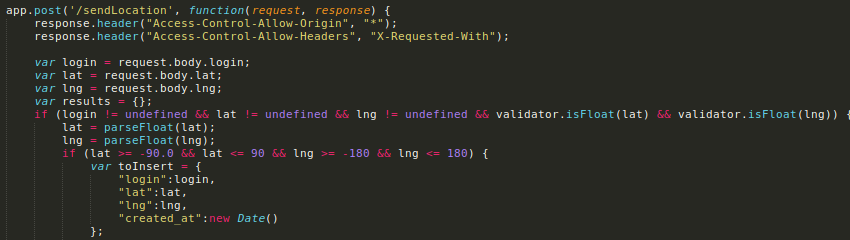
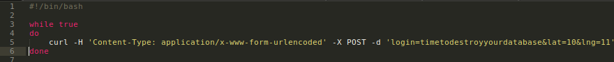
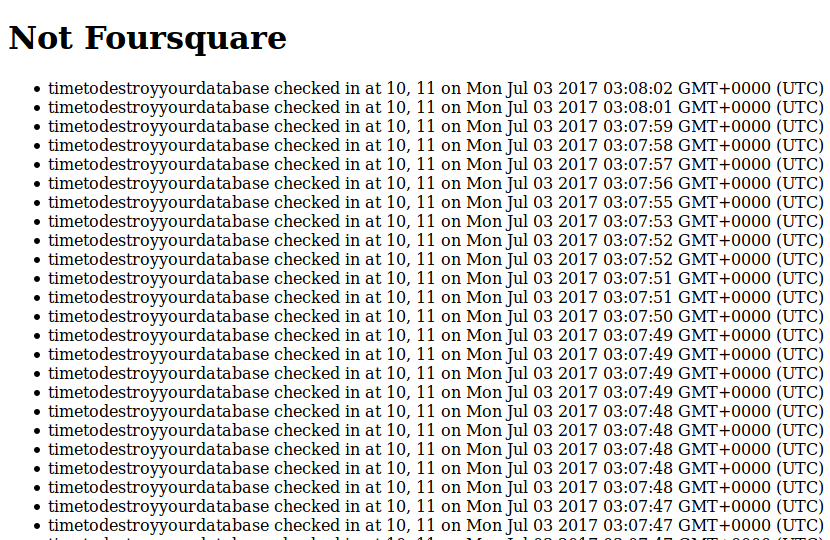
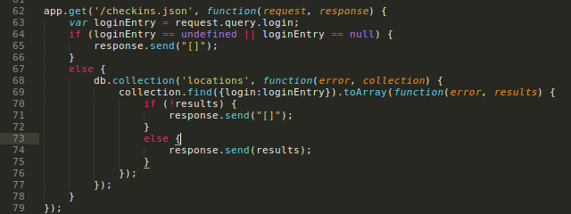
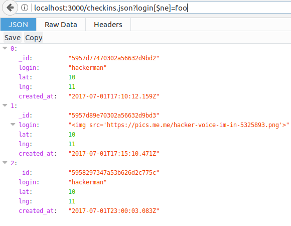

Security Assesment
Prepared by Allen Zhou 7/3/17
Introduction
This assessment tests the security of a simple node.js server built from an express framework and a mongodb database for COMP 20, lab 13. The web application allows clients to make POST requests to /sendLocation with their latitude, longitude, and login name. Accessing the root / shows all the POST request checkins made. Making a GET request to /checkins.json with the user's login name as a query provides all of that user's checkins. Many glaring vulnerabilities exist in the given server code, which makes it susceptible to cross site scripting (XSS) and noSQL database injections. This document will identify specific instances of these vulnerabilities and then provide solutions.
Methodology
In order to test the security flaws in the given server code, I first reviewed the code, paying attention to where clients could submit data to the server. I then downloaded the code and ran it on a localhost, and began to simulate attacks on the server using curl on the command line to create malicious POST and GET requests. After inflicting damage onto the server through these attacks, I reviewed the code and ways in which security could be improved.
Abstract of Findings
This web application is incredibly susceptible due to the false assumption that client input will always be properly formatted and regulated. Mistakes in server side security in the given code can allow attackers to deliver malicious content to other users, spam the database with useless data, and perform database injections, allowing attackers to see possibly sensitive data. In its current state, this web application is not fit for use by clients.
Issues Found
-
Cross Site Scripting
- POST Request for /sendLocation
- Issue Severity: HIGH This security flaw allows attackers to deliver malicious content to other users within the context of their session, ranging from issues as mild as displaying arbitrary HTML code on another user's session, to hijacking the browser, forcing it to crash, or even stealing sensitive user data through javascript code. As a result, this cross site scripting vulnerability is labelled as a HIGH priority security issue
- Shown below are the lines of offending code

- The issue described above is created when the user's input for the login variable is not sanitized or ensured that it is a valid and non-malicious string. Instead, it is directly inserted into the database, regardless of what it is. As a result, an attacker can insert some HTML or Javascript code that would in turn be reflected upon all future users who access the web application. Shown below is a normal use of the POST request at /sendLocation, and then the result of a simple attack created by running the following curl command in the command prompt.


- In order to patch this security flaw, the user input for the login field must be sanitized. This can be done in a number of ways, most simply by using a library like validator.js to automatically sanitize the user string input by calling a function like escape()
-
Database Spamming
- POST Request for /sendLocation
- Issue Severity: MED This security flaw allows attackers to abuse the unregulated POST request feature at /sendLocation. At it's worst, the database will be filled up with spam and meaningless content, eventually causing the server's space to be completely used up. Since this cannot affect clients and cannot spread malware the way cross site scripting does, this issue has been labelled as a MED priority security issue. However, it is still a huge security flaw, as it can result in server space being rendered useless, and will likely cause the site to also become useless once no more POST requests created by actual clients can be saved in the database.
- Since the server does not filter POST requests, it is easy for attackers to spam the database by repeatedly calling curl commands through a simple bash script, like the one shown below. Running this script will cause endless POST requests to /sendLocation, resulting in a page similar to the one seen below. As seen here, running such a script can result in up to 5 POST requests per second to the server.


- In order to patch this security flaw, some form of POST request filter must be applied before a request is inserted into the database. This could look like a filter in which any IP address can only make a certain number of POST requests per minute, or limiting the IP addresses able to send POST requests at all to only trusted sources.
-
NoSQL Database Injections
- GET Request for /checkins.json
- Issue Severity: MED This security flaw allows attackers to use the GET request function at /checkins.json to perform NoSQL database injections. This can allow attackers to view not only their own checkins, but all the checkins. Were the database to hold more sensitive information, like passwords or credit card info, this security flaw would be a much larger issue. But since the GET request for the home page of the site already provides all the checkins, this has been labelled as a MED priority security issue. Nontheless, the security flaw should be patched in case features are to be added to the site that would allow secure logins, with usernames and passwords.
- Shown below are the offending lines of code

- The issue is created when the login query is not sanitized. It is directly set equal to the variable loginEntry, which in turn is directly searched for through the database. As a result, an attacker can pass in queries with MongoDB operators to bypass needing specific login to access specific checkins. As a result typing something like the following into a browser's URI bar can result in all checkins being displayed, rather than just one specific login.

- To fix this, the login query must be sanitized. Once again, this can be achieved by including a library like validator.js that can sanitize user input using its escape() function.
Conclusion
Although there are several security flaws in this site, they are all relatively easy and cheap to fix. Leaving the site as is, however, is a huge security issue, both to the server and to clients. In order to repair the site of its security flaws, it would cost about $100.